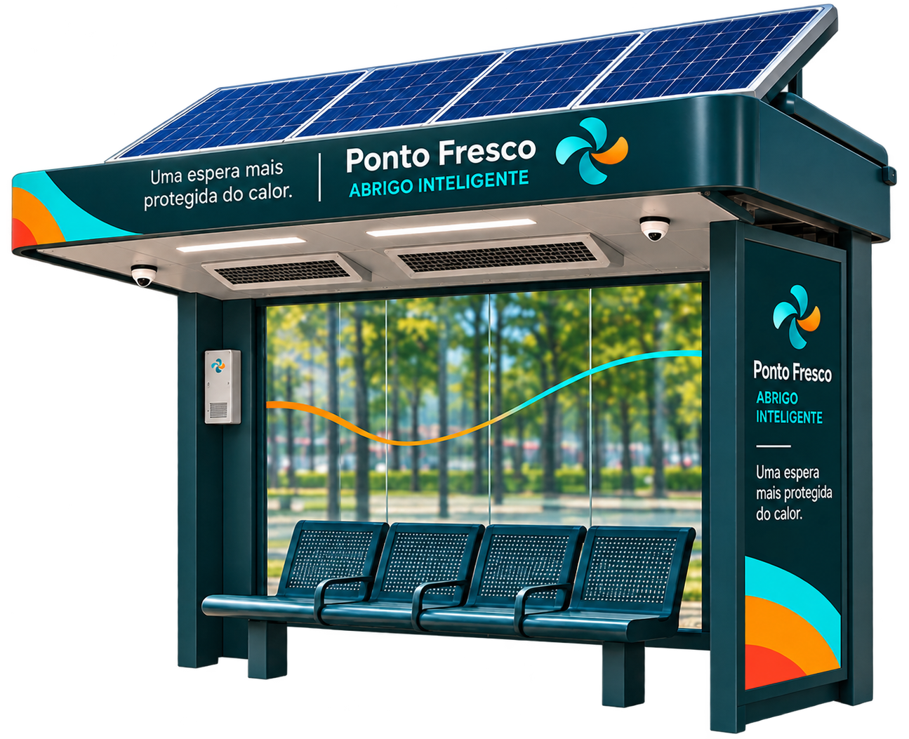

Exposição ao sol
Em paradas sem cobertura adequada, os passageiros podem ficar expostos ao sol enquanto aguardam o ônibus.
TECNOLOGIA PARA MOBILIDADE URBANA
Conheça o Ponto Fresco, uma proposta de abrigo inteligente com sombra, sensores e ventilação automática sob demanda.
Conheça a solução
O PROBLEMA | ZONA NORTE DO RIO
Na Zona Norte do Rio de Janeiro, o calor intenso pode tornar a espera pelo ônibus ainda mais desconfortável, especialmente em pontos com pouca ou nenhuma proteção contra o sol.
Para compreender melhor essa realidade, selecionamos três pontos de ônibus em Del Castilho e nas proximidades como referência para nossas análises.
Foi pensando nesse cenário que surgiu o Ponto Fresco: uma proposta para oferecer mais proteção durante a espera e utilizar a tecnologia para tornar esses espaços mais preparados para o calor.
Em paradas sem cobertura adequada, os passageiros podem ficar expostos ao sol enquanto aguardam o ônibus.
As condições de sombra e estrutura variam entre os pontos, oferecendo diferentes níveis de proteção.
Uma infraestrutura com sombra e recursos adaptados ao calor pode contribuir para uma experiência de espera mais confortável.
O Ponto Fresco combina cobertura, sensores e ventilação automatizada para tornar a espera mais protegida.
Teste diferentes condições de temperatura e movimento para entender o funcionamento da ventilação.
Explore dados simulados de três pontos de ônibus e entenda como funciona a prioridade de melhorias.
Conheça as estimativas de consumo energético e os benefícios esperados para a mobilidade urbana.